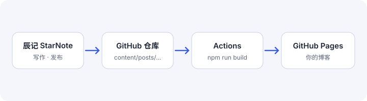

一句话：文章在辰记写，网站在你自己的 GitHub 仓库里。辰记只往仓库提交「front matter + 正文 HTML」的文章文件，GitHub Actions 用这个模板把整站构建出来。仓库归你，离开辰记站点照样能更新。
在模板仓库点 Use this template，仓库名建议填 <用户名>.github.io。
生成一个只授权这个仓库的细粒度令牌（Contents、Pages 读写）。
在辰记「绑定 GitHub」里填仓库名和令牌，辰记会开启 Pages 并发布第一篇文章。
仓库名不是 <用户名>.github.io 时，网站在 /仓库名/ 子路径下，模板会自动处理所有链接。

辰记通过 GitHub API 一次提交写入文章目录：
content/posts/hello-starnote/
├── index.zh.html # 中文正文
├── index.en.html # 英文译文（可选）
└── cover.png # 封面与正文图片推送触发 .github/workflows/pages.yml：安装依赖、运行 npm run build、上传 _site/ 并部署。
文件 | 用途 |
|---|---|
每篇文章的 HTML | canonical、OG、JSON-LD、hreflang 都在构建时写好 |
sitemap.xml | 索引 + 每种语言一份，带译文互指 |
feed.xml / atom.xml | 全文订阅，中英文各一份 |
llms.txt / *.md | 给 AI 搜索引用的纯文本版本 |
中文在根路径，英文在 /en/。同一篇文章的两种语言放在同一个目录里，页面会互相声明 hreflang；只有一种语言的文章不会出现语言切换。
站点是你的，内容也是你的：文章文件是标准的 front matter + HTML，Jekyll、Hugo、Eleventy 都能直接读。